n <- 101
SimData <- data.table(x = (1:n) + rnorm(n, 0, 0.1))
SimData$y <- sin(SimData$x/n*(2*pi))
SimData$yobs <- SimData$y + rnorm(n, 0, 0.2)
p <- ggplot(SimData, aes(x = x, y = yobs)) + geom_point() +
geom_line(aes(y = y), color = "orange", lwd = 1)
p1 A LOESS simító
1.1 Motiváció
Első lépésben előkészítünk egy demonstrációs adatbázist. Szimulált adatokat fogunk használni (zajos szinusz), így mi is tudni fogjuk, hogy mi az igazság, a valódi függvény amiből a pontok jöttek:
Paraméteres görbeillesztésnél fel kell tételeznünk egy függvényformát (ti. ami a pontok mögött van a valóságban). Például, hogy lineáris:
p + geom_smooth(formula = y~x, method = "lm", se = FALSE)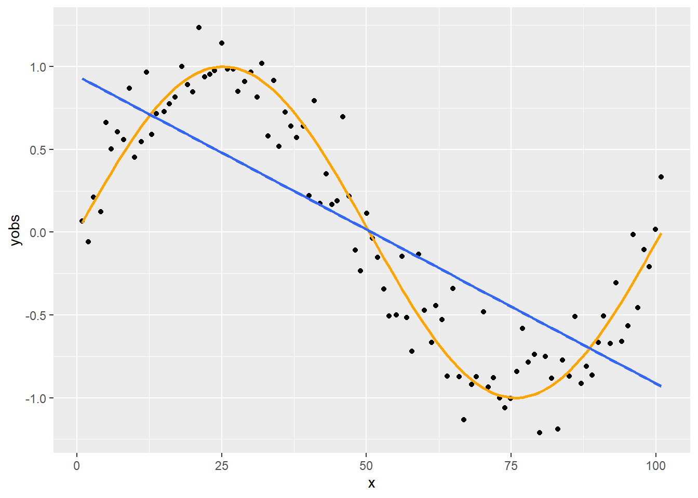
Ez az ábra jól mutatja ennek a fő problémáját: hogy ezt a feltételezést el is ronthatjuk! Természetesen vannak diagnosztikai eszközök ennek felderítésére, például megnézhetjük a reziduumokat az \(x\) függvényében, ami a fenti esetben nagyon csúnyán fog kinézni, és ez alapján kereshetünk jobb függvényformát, de gyökerestül csak az oldja meg a problémát, ha olyan módszert találnánk, ami a nélkül működik, hogy egyáltalán fel kelljen tételeznie – bármilyen – függvényformát. Ezt valósítják meg a simítási eljárások. (Lényegében nemparaméteres regresszióról van szó.)
Annak az előnynek, hogy nem kell ilyen feltételezéssel élnünk (és így azt el sem ronthatjuk), természetesen ára van: kevésbé hatásosan becsülhető, mint a paraméteres illesztés, nincsenek számszerű paramétereink (aminek esetleg tárgyterületi interpretációt lehet adni), csak ábrát tudunk rajzolni, és végezetül extrapoláció sem lehetséges, legalábbis nem triviálisan.
1.2 A LOESS simító alapgondolata
Az egyik legnépszerűbb megoldás a LOESS (locally weighted scatterplot smoothing, néha LOWESS, vagy Savitzky–Golay szűrő), melynek alapgondolata, hogy végigmegy az \(x\)-változó releváns tartományán, és minden értékre meghatározza a pontfelhő ottani, tehát lokális közelítését, egy polinomális regresszióból. Utána az egész simítást ezekből a darabkákból építi fel.
Legyen például a vizsgált érték a \(23.5\):
p + geom_vline(xintercept = 23.5, color = "red")1.3 Lokalitás
A lokalitást két eszközzel érjük el. Az egyik, hogy nem használjuk az összes pontot, csak a vizsgált értékhez legközelebb eső \(\alpha\) hányadát (ha ez nem egész lenne, akkor felső egészrészt veszünk); ezt a paramétert szokták span-nek is nevezni. Például, ha ez 75%, akkor a távolság ameddig figyelembe vesszük a pontokat:
span <- 0.75
n*span[1] 75.75ceiling(n*span)[1] 76sort(abs(SimData$x-23.5))[ceiling(n*span)][1] 52.52914A másik eszköz, hogy még a megtartott pontokon belül is súlyozunk: minél távolabb esik egy pont a vizsgált értéktől annál kisebb lesz a súlya. Általában a trikubikus súlyfüggvényt használjuk:
tricube <- function(u, t) ifelse(u<t, (1-(u/t)^3)^3, 0)
curve(tricube(x, 2), to = 3)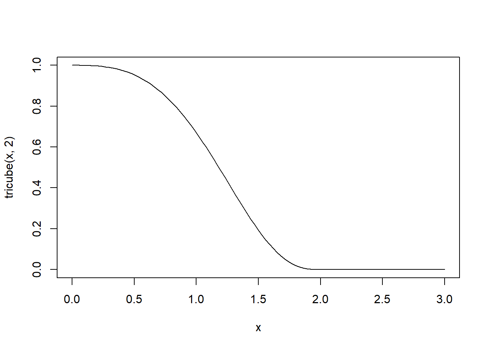
(A fenti definícióval természetesen a kétféle lépés együtt van benne a tricube függvényben.)
A felhasznált pontok:
SimData$w <- tricube(abs(SimData$x-23.5), sort(abs(SimData$x-23.5))[ceiling(n*span)])
ggplot(SimData, aes(x = x, y = yobs, color = w>0)) + geom_point()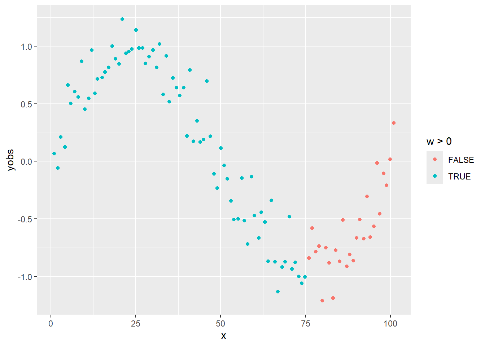
A súlyozás:
ggplot(SimData, aes(x = x, y = yobs, color = w)) + geom_point()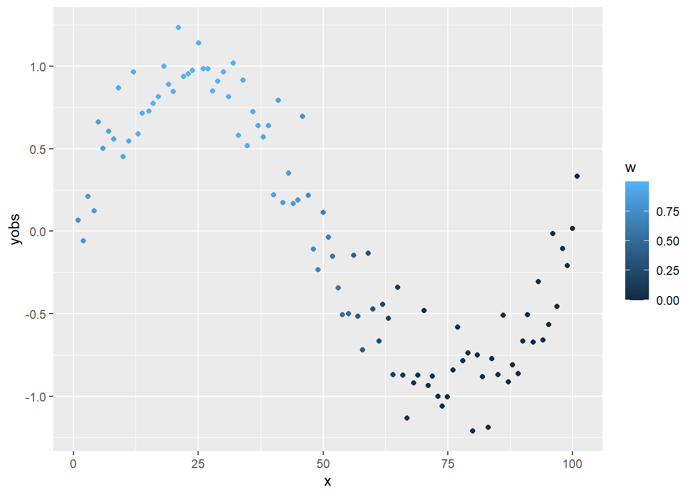
1.4 Polinomiális regresszió
A leszűkített és átsúlyozott ponthalmazra – ezt most tehát egyben tartalmazza a w – egy polinomális regressziót illesztünk.
Legegyszerűbb esetben ez lineáris regresszió:
fit <- lm(yobs ~ x, weights = w, data = SimData)
p + geom_vline(xintercept = 23.5, color = "red") +
geom_abline(intercept = coef(fit)[1], slope = coef(fit)[2])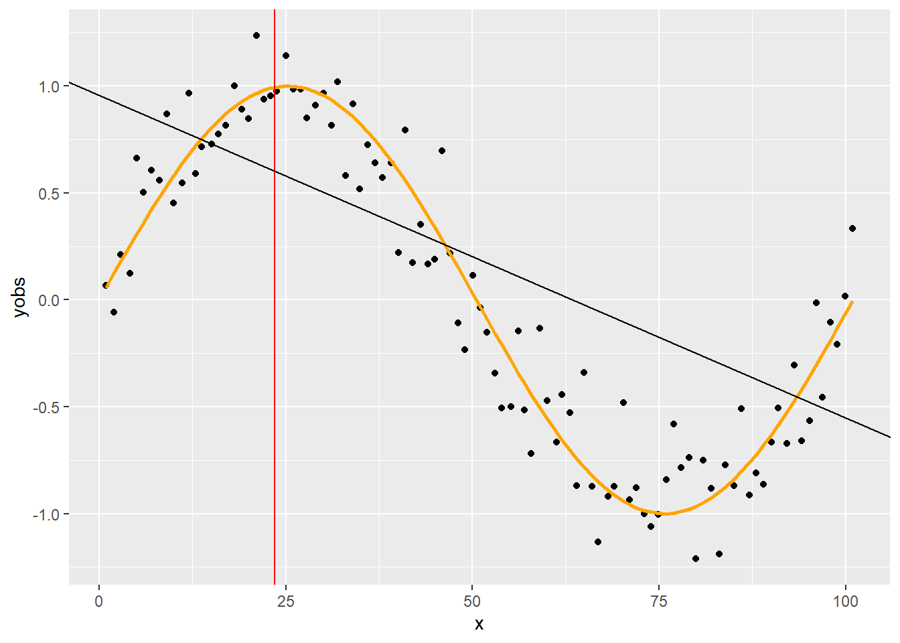
Az illesztett regressziónak azt a pontját vesszük ki, ami a vizsgált érték volt! Az előbbi példát folytatva:
p + geom_abline(intercept = coef(fit)[1], slope = coef(fit)[2]) +
geom_vline(xintercept = 23.5, color = "red") +
geom_point(x = 23.5, y = predict(fit, data.table(x = 23.5)), color="red")A dolgot automatizálhatjuk is:
loessfun <- function(xin, x, yobs, span) {
n <- length(x)
w <- tricube(abs(x-xin), sort(abs(x-xin))[ceiling(n*span)])
fit <- lm(yobs ~ x, weights = w)
predict(fit, data.table(x = xin))
}
p + geom_vline(xintercept = 23.5, color = "red") +
geom_point(x = 23.5, y = loessfun(23.5, SimData$x, SimData$yobs, 0.75), color="red")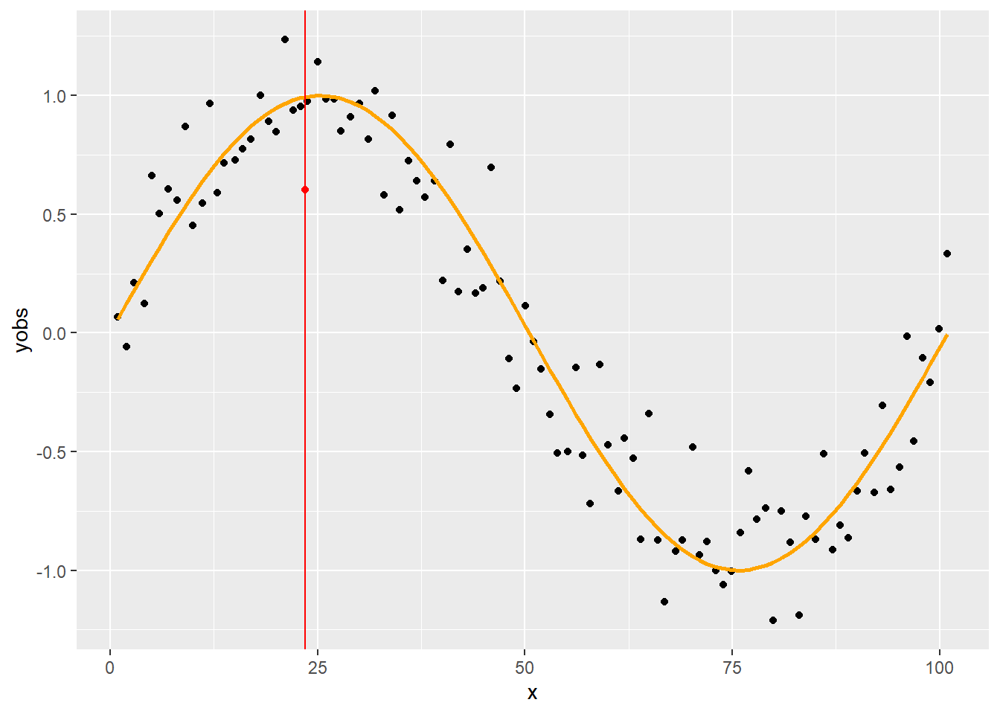
Ezt használva természetesen kényelmesen kiszámíthatjuk ezt bármely más értékre is:
p + geom_vline(xintercept = 48.3, color = "red") +
geom_point(x = 48.3, y = loessfun(48.3, SimData$x, SimData$yobs, 0.75), color="red")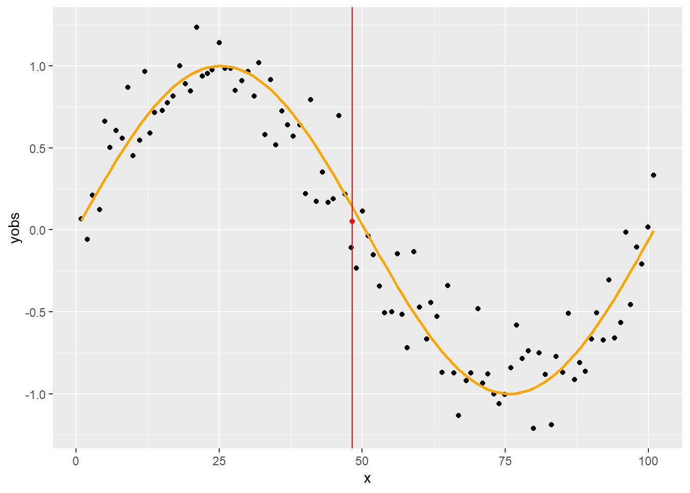
p + geom_vline(xintercept = 91.2, color = "red") +
geom_point(x = 91.2, y = loessfun(91.2, SimData$x, SimData$yobs, 0.75), color="red")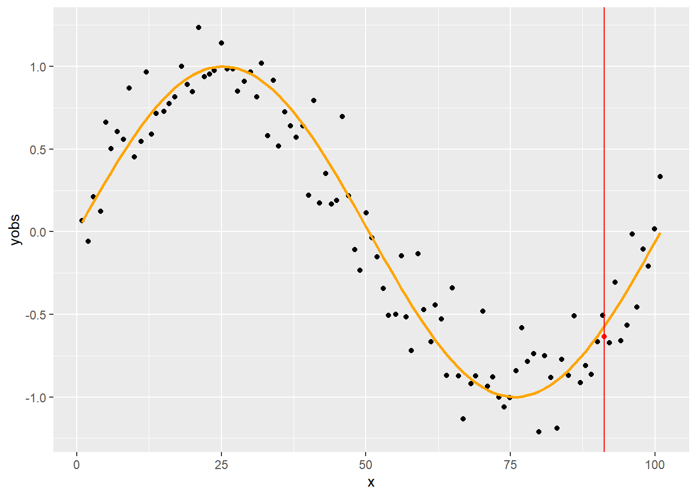
1.5 Összerakva az építőelemeket: lokális polinomiális regressziókkal közelítés
Innen már értelemszerű a következő lépés, számítsuk ki ezeket a simított értékeket az \(x\) releváns tartományának minden pontjára:
SmoothData <- data.table(x = seq(0, 101, 0.1))
SmoothData$value <- apply(SmoothData, 1, function(sm)
loessfun(sm["x"], SimData$x, SimData$yobs, 0.75))
p + geom_line(data = SmoothData, aes(x = x, y = value), color = "red")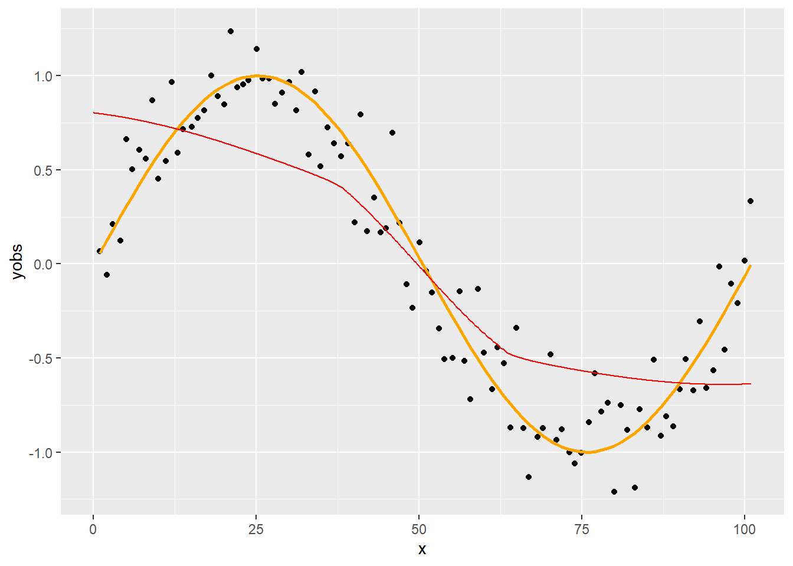
Ez lesz a LOESS simítás!
Min múlott az eredmény? Két paramétert használtunk: azt, hogy a pontok mekkora hányadát tartjuk meg, és azt, hogy hányadfokú polinomot illesztettünk. A fenti példában ezek \(\alpha=0,\!75\) és \(p=1\). (Természetesen a súlyozófüggvény a harmadik paraméter, de azt most végig rögzítettnek fogjuk tekinteni.)
1.6 A paraméterek megválasztásának hatása: lokalitás
Kézenfekvő a kérdés, hogy vajon a simításra hogyan hatnak ezek a paraméterek (annál is inkább, mert a fenti simítás nem néz ki túl bíztatóan!). Kezdjük a lokalitást szabályzó \(\alpha\) paraméter hatásával:
SmoothData <- CJ(x = seq(0, 101, 0.5), span = c(2/n+1e-10, 0.25, 0.5, 0.75, 1))
SmoothData$value <- apply(SmoothData, 1, function(sm)
loessfun(sm["x"], SimData$x, SimData$yobs, sm["span"]))
p + geom_line(data = SmoothData[span%in%c(0.25, 0.5, 0.75)],
aes(x = x, y = value, color = factor(span)))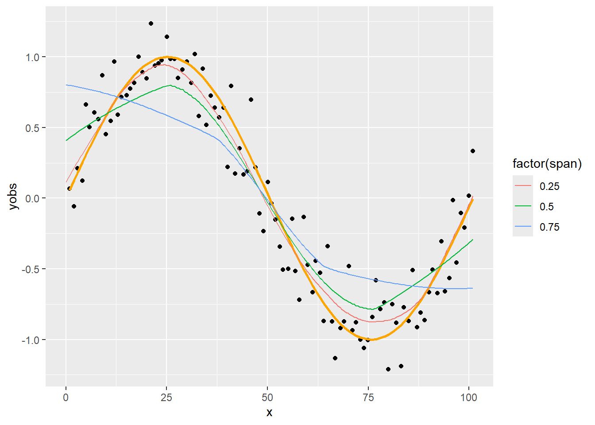
Még szemléletesebb, ha megnézzük a két szélső értéket is. Ha minden pontot figyelembe veszünk (nincs lokalitás):
p + geom_line(data = SmoothData[span==1], aes(x = x, y = value), color = "red")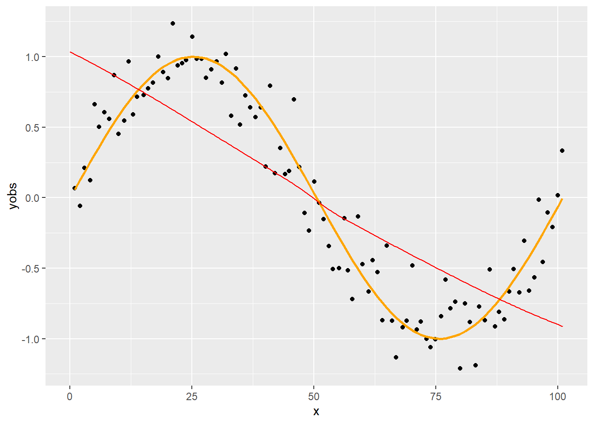
Ha semennyi pontot nem veszünk figyelembe, a legközelebbi kettő kivételével értelemszerűen, hogy legyen mire illeszteni a görbét (teljes lokalitás):
p + geom_line(data = SmoothData[span==2/n+1e-10], aes(x = x, y = value), color = "red")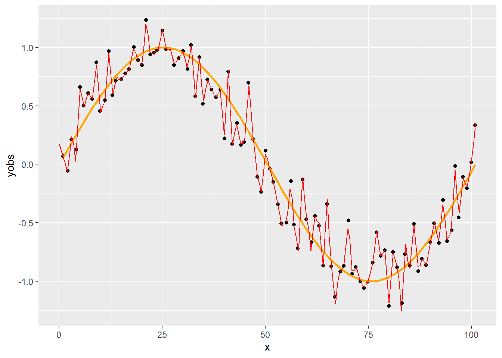
Az első esetet szokták úgy hívni, hogy túlsimítás, a másodikat úgy, hogy alulsimítás. Vajon hogyan tudjuk a simítási paraméter (ennél a módszernél az \(\alpha\)) értékét optimálisan megválasztani?
1.7 A paraméterek megválasztásának hatása: a polinom fokszáma
Mielőtt az előbbi kérdésre válaszolunk, meg kell nézni még egy kérdést, mert vissza fog hatni a válaszra: az illesztett polinom \(p\) fokszámát. Vajon mi történik, ha lineáris regresszió helyett magasabb fokszámú polinomot használunk?
1.7.1 Kitérő: polinomiális regresszió illesztésének szintaktikája R alatt
Érdemes kitérni arra a kérdésre, hogy a polinomiális regressziót hogyan kell R alatt specifikálni (az lm-nek megadni).
A dolognak van ugyanis egy szintaktikai trükkje. Az ugyanis, ami a legkézenfekvőbbnek tűnne, nem működik:
lm(y ~ x + x^2, data = SimData)
Call:
lm(formula = y ~ x + x^2, data = SimData)
Coefficients:
(Intercept) x
0.96485 -0.01892 A probléma oka, hogy az lm formula interfészében a műveleti jelek speciálisan viselkednek. A ^ nem a hatványozás jele, hanem interakciót specifikál, azaz az (x+y)^2 ugyanaz mint az x+y+x:y, viszont egy tagnál nincs mivel interakciót képezni (az x:x nem az x saját magával vett szorzata lesz, ami nekünk jó lenne, hanem simán x!), így az x^2 ugyanaz lesz mint az x.
A megoldást az I() függvény jelenti, ami azt mondja az R-nek, hogy a beleírt kifejezésben szereplő operátorokat a szokásos aritmetikai értelemmel értékelje ki:
lm(y ~ x + I(x^2), data = SimData)
Call:
lm(formula = y ~ x + I(x^2), data = SimData)
Coefficients:
(Intercept) x I(x^2)
1.014e+00 -2.178e-02 2.806e-05 Ez már működik, de eljárhatunk egyszerűbben is, a poly függvény ugyanis pont erre szolgál:
lm(y ~ poly(x, 2), data = SimData)
Call:
lm(formula = y ~ poly(x, 2), data = SimData)
Coefficients:
(Intercept) poly(x, 2)1 poly(x, 2)2
-0.0001279 -5.5423654 0.2142741 Látszólag mást kaptunk, de valójában csak a parametrizálásban van eltérés, a predikciók azonosak:
predict(lm(y ~ x + I(x^2), data = SimData), data.table(x = 43.9)) 1
0.1119441 predict(lm(y ~ poly(x, 2), data = SimData), data.table(x = 43.9)) 1
0.1119441 A magyarázat, hogy a poly alapjáraton ortogonalizálja a tagokat (azaz olyan másodfokú polinomot szolgáltat, melynek elemei korrelálatlanok egymással). Nézzük is meg, a kapott vektorok csakugyan ortogonálisak, sőt, sortonormáltak:
t(cbind(1, poly(SimData$x, 3)))%*%cbind(1, poly(SimData$x, 3)) 1 2 3
1.010000e+02 2.498002e-16 2.470246e-15 1.609823e-15
1 2.498002e-16 1.000000e+00 -3.191891e-16 -5.551115e-17
2 2.470246e-15 -3.191891e-16 1.000000e+00 1.249001e-16
3 1.609823e-15 -5.551115e-17 1.249001e-16 1.000000e+00Ha szeretnénk, ezt kikapcsolhatjuk, és akkor visszakapjuk a kézel létrehozott eredményt:
lm(y ~ poly(x, 2, raw = TRUE), data = SimData)
Call:
lm(formula = y ~ poly(x, 2, raw = TRUE), data = SimData)
Coefficients:
(Intercept) poly(x, 2, raw = TRUE)1 poly(x, 2, raw = TRUE)2
1.014e+00 -2.178e-02 2.806e-05 Az alapértelmezett persze nem véletlenül az, ami: az ortogonális polinomok becslése sokkal jobb numerikus szempontból. Például a modellmátrix kondíciószámát nézve:
kappa(cbind(1, poly(SimData$x, 3)), exact = TRUE)[1] 10.04988kappa(cbind(1, poly(SimData$x, 3, raw = TRUE)), exact = TRUE)[1] 1651776A poly használata nem csak elegánsabb és numerikusan szerencsésebb, de jóval kényelmesebb is (gondoljunk bele mi volna, ha véletlenül tizedfokú polinomot akarnánk specifikálni, vagy változó lenne, hogy hányadfokú polinomról van szó).
1.7.2 Polinom fokszámának változtatása
Most már könnyedén megoldhatjuk, hogy a fokszám is változtatható legyen:
loessfun <- function(xin, x, yobs, span, degree) {
n <- length(x)
w <- tricube(abs(x-xin), sort(abs(x-xin))[ceiling(n*span)])
fit <- lm(yobs ~ poly(x, degree), weights = w)
predict(fit, data.table(x = xin))
}Ezt használva immár különböző fokszámokkal és simítási paraméterrel is próbálkozhatunk:
SmoothData <- CJ(x = seq(0, 101, 0.5), degree = c(1, 2),
span = (5:99)/100)
SmoothData$value <- apply(SmoothData, 1, function(sm)
loessfun(sm["x"], SimData$x, SimData$yobs, sm["span"], sm["degree"]))
p + geom_line(data = SmoothData[span%in%c(0.25, 0.5, 0.75)],
aes(x = x, y = value, color = factor(span))) +
facet_grid(rows = vars(degree))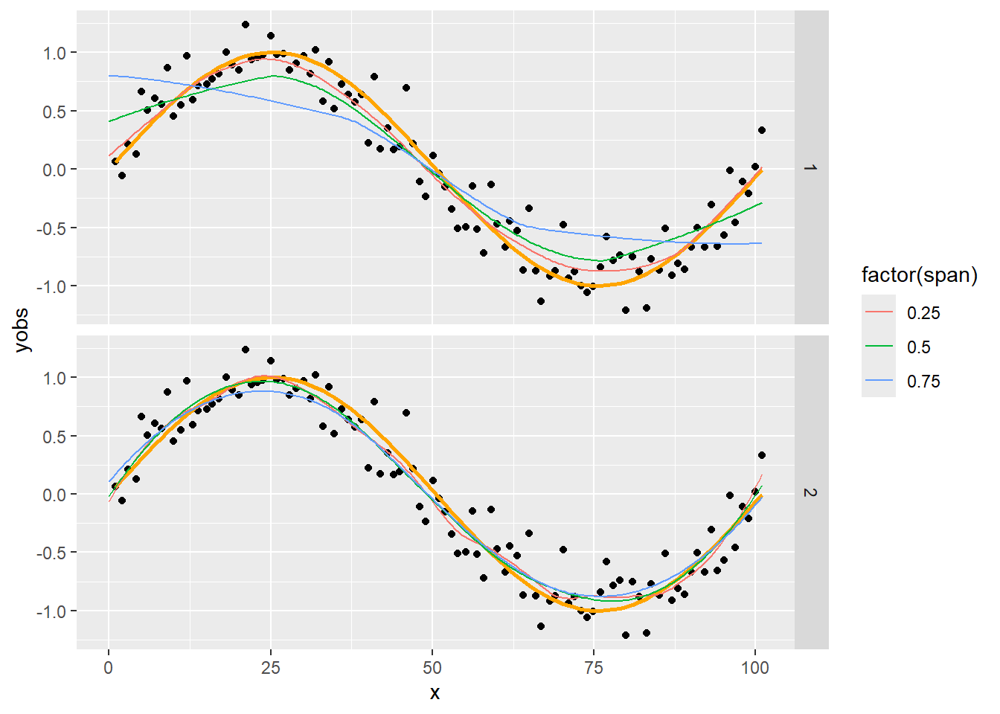
Egy nagyon fontos dolgot látunk: ha áttérünk a másodfokú polinom használatára, akkor gyakorlatilag a simítási paramétertől függetlenül szinte tökéletes simítást kapunk!
1.8 A paraméterek megválasztása
Adja magát a kérdés, hogy a paramétereket hogyan választhatjuk meg egy valódi helyzetben (értsd: ahol mi sem tudjuk mi az igazi függvény).
Itt most csak az érzékeltetés kedvéért mutatunk meg egy nagyon egyszerű módszert (megjegyezve, hogy ennél okosabban is el lehet járni, de ez is szemléltetni fogja, hogy a probléma kezelhető).
Amit meg fogunk nézni az lényegében egy hold-out set validáció. A simitás jóságát azzal fogjuk mérni, hogy a simítógörbe és a pontok között mekkora a négyzetes eltérésösszeg. Ennek minimalizálása természetesen mindig alulsimított megoldást eredményezne, hiszen ez a célfüggvény nullába is vihető. Éppen ezért cselesebben járunk el: a pontokat véletlenszerűen két részre osztjuk, az egyik alapján határozzuk meg a simítógörbét (tanítóhalmaz), de a hibát a másik halmazon (teszthalmaz) mérjük le! Így ha elkezdünk túlsimítani, akkor a tanítóhalmazon ugyan csökken a hiba, de a teszthalmazon elkezd nőni. Azt a simítást választjuk tehát, ami a teszthalmazon mért hibát minimalizálja.
SimData$train <- FALSE
SimData$train[sample(1:101, 80)] <- TRUE
ggplot(SimData, aes(x = x, y = yobs, color = train)) + geom_point() +
geom_line(aes(y = y), color = "orange", lwd = 1)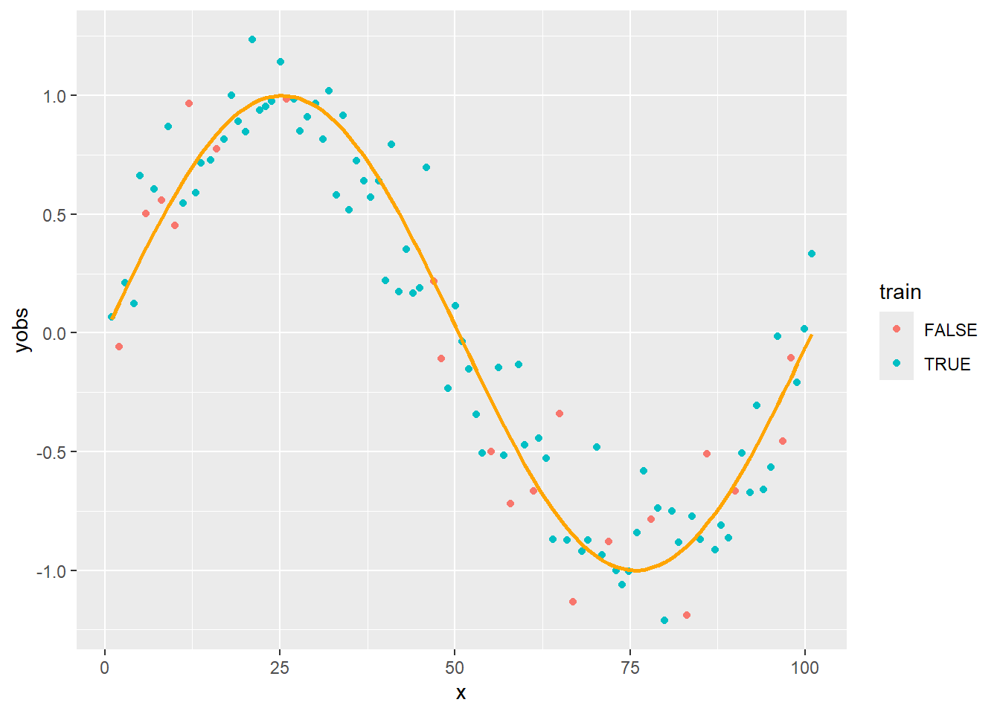
Nézzük meg hogyan alakul a hiba a simítási paraméter változtatásával, ha az összes pontra illesztünk (az egyszerűség kedvéért a fokszám legyen fixen 1, tehát csak az \(\alpha\) hatását vizsgáljuk – a fokszám, vagy bármilyen más paraméter ugyanígy lenne kezelhető):
SmoothData2 <- merge(SimData, CJ(x = unique(SimData$x), degree = 1,
span = (3:99)/100), by = "x")
SmoothData2$value <- apply(SmoothData2, 1, function(sm)
loessfun(sm["x"], SimData$x, SimData$yobs, sm["span"], sm["degree"]))
ggplot(SmoothData2[, .(SSE = sum((value-yobs)^2)) , .(span)],
aes(x = span, y = SSE)) + geom_line()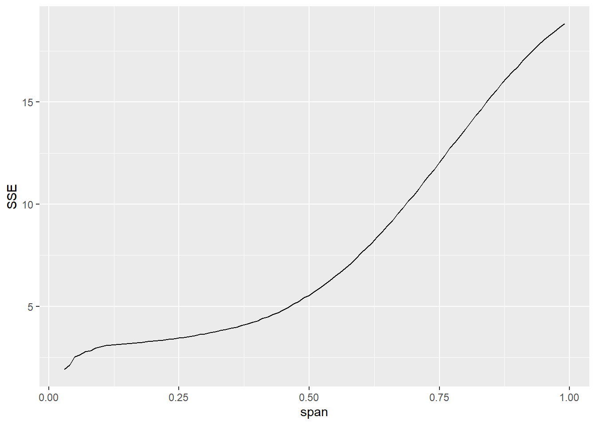
Ahogy vártuk, a hiba folyamatosan csökken, az alulsimított megoldás tűnik a legjobbnak. Jól látható, hogy az alulsimítás a túlilleszkedés analóg fogalma!
Most vessük be a trükköt: csak a tanítóhalmazra illesztünk, miközben a teszthalmazon mérjük a hibát. Íme az eredmény:
SmoothData3 <- merge(SimData[train==FALSE],
CJ(x = unique(SimData[train==FALSE]$x), degree = 1,
span = (3:99)/100), by = "x")
SmoothData3$value <- apply(SmoothData3, 1, function(sm)
loessfun(sm["x"], SimData[train==TRUE]$x, SimData[train==TRUE]$yobs,
sm["span"], sm["degree"]))
ggplot(SmoothData3[, .(SSE = sum((value-yobs)^2)) , .(span)],
aes(x = span, y = SSE)) + geom_line()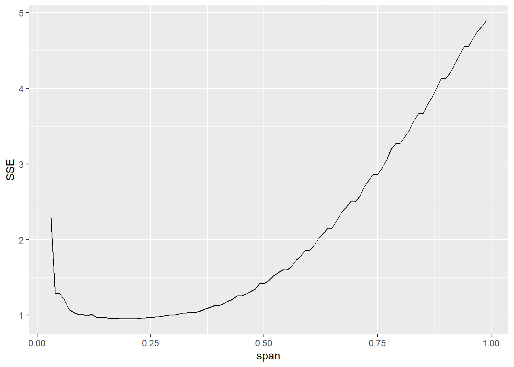
Pontosan a várakozásainknak megfelelően így már szép, értelmes optimum van: mind a túl-, mind az alulsimítást észre tudjuk venni ezzel a validációval.
Az optimális simítási paraméter értéke számszerűen is meghatározható:
optspan <- SmoothData3[, .(SSE = sum((value-yobs)^2)) , .(span)][order(SSE)][1]
optspan span SSE
<num> <num>
1: 0.21 0.9498537A simítás ezzel:
p + geom_line(data = SmoothData[span==optspan$span°ree==1],
aes(x = x, y = value), color = "red")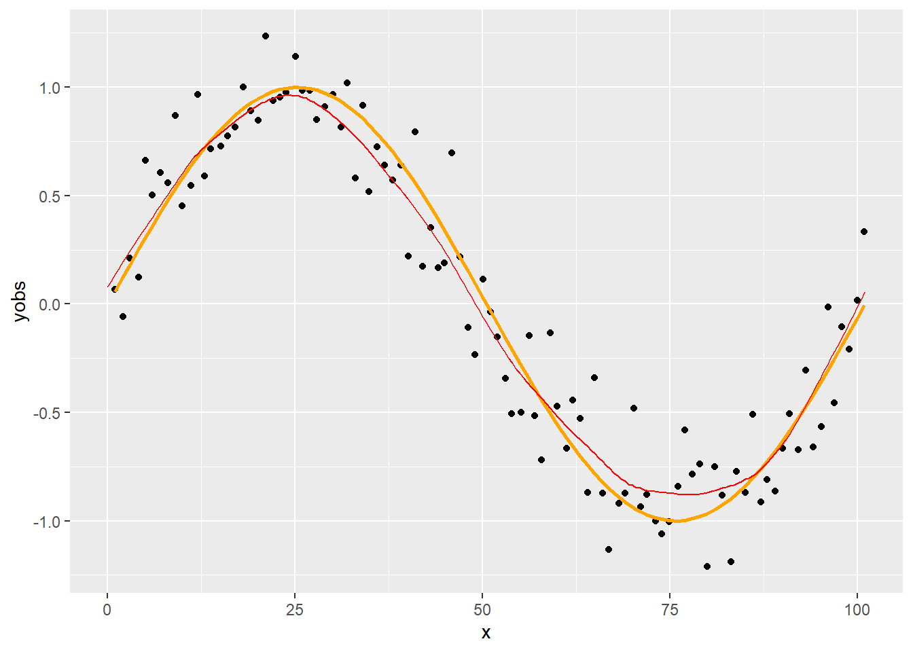